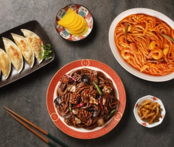

중식이란?
중식은 다양한 재료와 강한 불맛, 풍부한 양념이 어우러져 깊고 진한 맛을 느낄 수 있는 음식입니다. 짭짤하고 달콤한 맛부터 매콤하고 고소한 맛까지 다양하며, 볶음·튀김·찜 등의 조리법에 따라 색다른 풍미를 즐길 수 있는 것이 특징입니다.
추천 음식점
← 메인페이지로 돌아가기
오늘 먹고 싶은 음식

중식은 다양한 재료와 강한 불맛, 풍부한 양념이 어우러져 깊고 진한 맛을 느낄 수 있는 음식입니다. 짭짤하고 달콤한 맛부터 매콤하고 고소한 맛까지 다양하며, 볶음·튀김·찜 등의 조리법에 따라 색다른 풍미를 즐길 수 있는 것이 특징입니다.